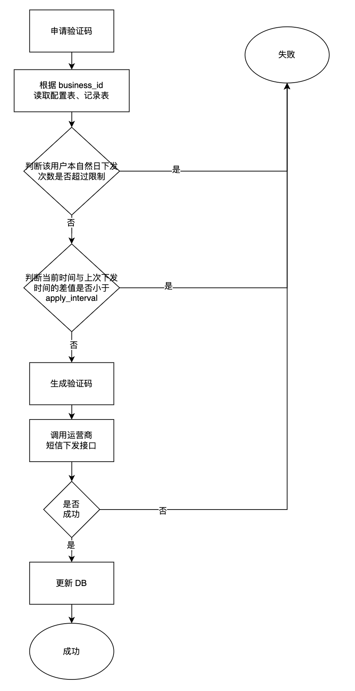
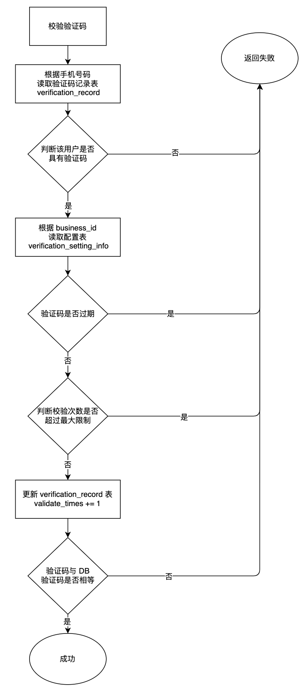

验证码发送设计与实现
验证码发送是一个很常见的场景，比如账号密码的找回，验证码登录等，但是如果稍加不注意，验证码发送接口有可能会造成盗刷，给用户带来不好的体验，且会给企业带来短信成本。接下来我将讨论如何设计验证码发送系统。
验证码发送可以是短信，也可以是邮箱，还可能涉及多个场景（登陆、交易等）。因为手机短信验证码发送及验证接口是无登陆态，任何人都可以触发，所以可能会带来以下的问题：
1、利用短信发送接口造成短信“轰炸”。
2、利用短信校验接口对服务器造成压力。
为了解决上述问题，我们需要记录一个号码的发送次数、发送频率以及校验次数，可以设计一张表来存储这些参数，比如验证码有效时间、每个用户的最大发送次数以及最大校验次数等，方便我们后面来做频控。
验证码配置表
1 | CREATE TABLE `verification_setting_info` |
验证码记录表
1 | CREATE TABLE `verification_record` |
下面是验证码下发流程图：

下面是验证码校验流程图：

为了更直观表现，下面是验证码下发的时序图：
sequenceDiagram autonumber 用户 ->>+ 后台服务: 请求获取验证码 rect rgb(191,223,255) note right of 后台服务: 频控：
1、发送时间间隔
2、当日发送次数 后台服务 ->>+ 存储: 查询记录 存储 -->>- 后台服务: 返回结果 后台服务 ->> 后台服务: 检查是否符合发送要求 end 后台服务 ->> 后台服务: 1、生成验证码
2、生成 msg_id 后台服务 ->>+ 短信供应商: 请求发送验证码 短信供应商 -->>- 后台服务: 返回请求结果 后台服务 ->>+ 存储: 更新验证码 存储 -->>- 后台服务: 返回结果 后台服务 -->>- 用户: 返回请求结果
考虑这样一个场景：同一个账户并发请求下发验证码接口，假如第一次请求发现 apply_count_per_day=19，apply_count_per_day(19)<max_count_per_day(20)判断通过有资格申请验证码，但是此时还没来得及更新 apply_count_per_day=apply_count_per_day+1（上图第4～8步骤之间）。第二个请求查询到脏数据 apply_count_per_day=19，同样有资格申请验证码。这样就绕过了每个自然日每个用户最大下发量的限制。
解决方案：将发送验证码放到更新验证码到 DB 步骤之后（即上图第 6 步在第 8 步骤之后），只有下面这条 SQL 执行成功才会请求发送验证码。
1 | update verification_record |
下面是验证码校验的时序图：
sequenceDiagram autonumber 用户 ->>+ 后台服务: 请求校验 后台服务 ->> 后台服务: 校验验证码 rect rgb(191,223,255) note right of 后台服务: 频控：
1、是否有验证码
2、验证码是否过期
3、校验次数 后台服务 ->>+ 存储: 查询记录 存储 -->- 后台服务: 返回结果 后台服务 ->> 后台服务: 检查是否符合发送要求 end 后台服务 -->> 后台服务: 校验结果 后台服务 ->>+ 存储: 更新 validate_times_per_day 存储 -->>- 后台服务: 返回 后台服务 -->>- 用户: 返回校验结果
考虑这样一个场景：当校验验证码的时候，同一个用户并发请求。假如第一个请求查询到 validate_times_per_day=9，validate_times_per_day(9)<max_validate_times_per_day(10)，判断通过可以校验验证码，但是此时还没来得及更新 validate_times_per_day=validate_times_per_day+1，第二个请求查询读到脏数据 validate_times_per_day=9，同样可以通过判断继续校验。这样就绕过了最大检验次数的限制，别人可以利用这个漏洞大量并发穷举验证码来增加暴力破解的概率。
解决方案：把验证码校验放在更新 DB 之后（即上图的第 6 步放到第 8 步之后），只有下面这条 SQL 执行成功才会校验验证码。
1 | update verification_record |
注意：判断发送时间间隔时需要比配置的 apply_interval 要小。
比如下面的判断代码段：
1 | if int64(time.Now().Sub(record.UpdatedAt).Seconds()) < int64(apply_interval) { |
上面的判断逻辑是有小问题的，假如 apply_interval=60s，前端也进行发送时间限制，用户点击发送验证码，前端页面展示 60s 倒计时，传递到后端落到数据库时 verification_record.update_at 参数是偏大的。如果下一次前端解除发送限制，用户立刻又点击发送验证码，后端判断这里可能会返回失败，因为此刻的时间 - record.UpdatedAt（偏大）< 60s。为了更好的用户体验，所以在判断时可以将 apply_interval 设置得偏小一些（视网络情况酌情而定）。
修改后（减了 5s）：
1 | if int64(time.Now().Sub(record.UpdatedAt).Seconds()) < int64(apply_interval-5) { |